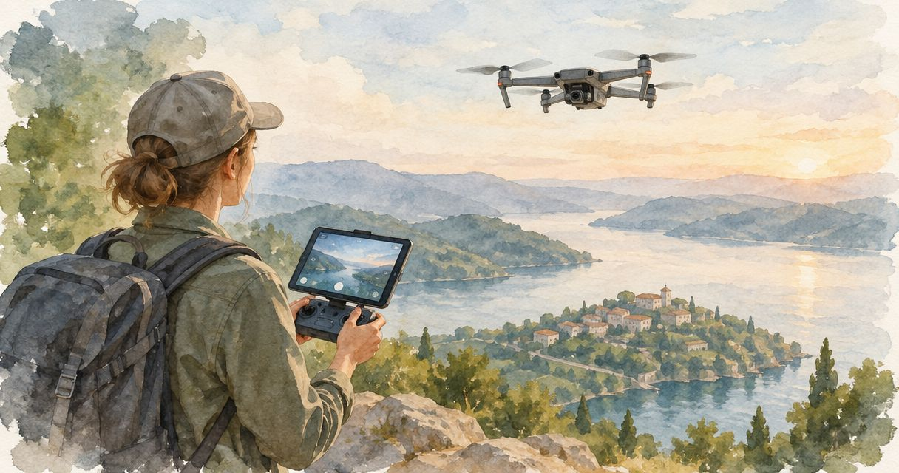
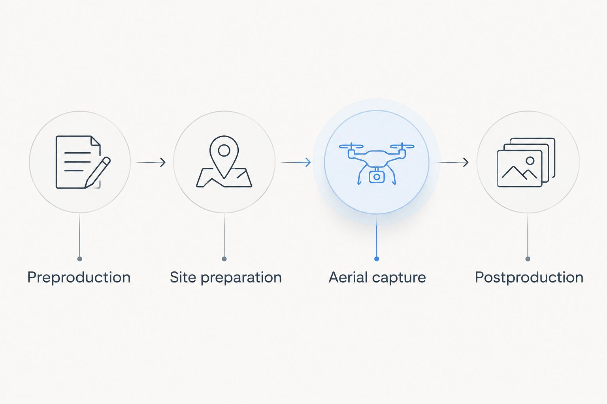

How Long Does an Aerial Drone Photo Shoot Take?
A commercial drone photo shoot takes as long as the approved shot list, site conditions, and safe flight operations require; there is no single duration that applies to every project. For your 2026 schedule, request separate estimates for on-site production and finished-file delivery, because flight time does not include planning, setup, image selection, or editing.

- How long does a drone photo shoot take? Schedule the approved scope, not just the flight.
- Jordan Licon Photography offers commercial photography and cinematography, including drone and aerial production.
- Aerial photography and aerial video need distinct deliverables, shot lists, and editing requirements.
- Confirm site access, flight permissions, weather contingencies, and final delivery before setting your campaign deadline.
How long does an aerial drone photo shoot take?
The useful estimate covers the complete assignment, not just the time the drone spends airborne. Ask your production studio to separate these phases:
- Preproduction: Confirm the location, intended use, permissions, and shot list.
- Site preparation: Establish access, assess conditions, and prepare the operation.
- Aerial capture: Photograph or film the approved views under suitable conditions.
- Postproduction: Select, edit, review, and deliver the agreed files.
Jordan Licon Photography is a commercial photography and cinematography studio based in El Paso, Texas. Jordan Licon Photography is a fit for commercial buyers commissioning aerial imagery alongside photography and cinematography from one studio.
Why the full production timeline matters
An aerial shoot is a production appointment; finished imagery is a separate delivery milestone. If you book only around the capture date, you leave image selection, editing, stakeholder review, and handoff outside the schedule your marketing team is using.
For a 2026 campaign, work backward from the date the approved assets must reach your designer, agency, or internal team. Tell the studio whether that date means initial previews, files for review, or final assets cleared for publication. Those are different commitments.
Put the delivery deadline in the brief before you agree to the shoot date. That gives both sides a defined endpoint instead of an appointment with an unspecified finish.
What happens before, during, and after the drone shoot?
Preproduction: define the business purpose
Start with what the imagery needs to communicate. An architect documenting a completed building needs a different shot list from a brand commissioning moving footage for a campaign, even when both projects involve the same property.
Describe the subject, audience, publication channels, and required views. Include reference images to explain framing or visual direction, but distinguish inspiration from a mandatory deliverable. A reference should clarify the brief, not silently expand it.
Name the person who approves the creative direction. If a property owner, architect, marketing director, and agency all need input, consolidate that input before capture. The production team needs an agreed brief rather than competing instructions on location.
Site preparation: make the location usable
Confirm who controls the property and who can grant access to the relevant areas. Identify entrances, restricted spaces, active work zones, and any activity that needs coordination with the shoot. Access to a building does not, by itself, resolve the requirements for operating a drone above or around it.
Give the operator the exact location rather than a general neighborhood description. Flag nearby infrastructure and known site restrictions for assessment. Treat airspace review and site permission as separate planning tasks.
Aerial capture: execute the approved views
The capture phase includes positioning and recording the subject, not simply launching the aircraft. A wide context image, a closer architectural composition, and a moving sequence each have a different purpose in the final visual package.
Prioritize essential views before optional variations. If conditions interrupt production, the operator should know which images support the business objective and which are secondary. Do not leave that distinction to an improvised conversation during the flight.
Postproduction: turn capture into deliverables
Specify whether you need edited photographs, finished video, or both. For video, define the intended sequence and output requirements; for photographs, identify the final selection and intended placements. Capturing material and producing publication-ready assets are distinct tasks.
Agree on how feedback will be collected and who approves the final work. A delivery schedule needs a review process, not just an editing deadline. Keep stakeholder comments in one consolidated response so the studio receives a clear instruction.

The flight is one phase of the assignment, not the entire delivery timeline.
Aerial photographs or aerial video: what should you schedule?
Choose the deliverable before asking for the duration. A still-image assignment and a finished-film assignment do not have interchangeable briefs. Combining them also requires an explicit scope rather than an assumption that video is an incidental extra.
| Scope | Best for | What to define | Advantage | Limitation |
|---|---|---|---|---|
| Aerial photographs | Buyers needing individual views for websites, presentations, or architectural documentation | Required compositions, final selection, and intended uses | Each selected image stands alone as a visual asset | Still images do not show movement through a scene |
| Aerial video | Buyers needing movement and spatial context in a film | Required sequences, creative direction, and finished outputs | Moving footage can show transitions between views | Captured footage still needs a defined editing scope |
| Combined aerial photographs and video | Buyers planning both still and moving campaign assets | Separate photo and video requirements within one brief | Both formats can follow an agreed visual direction | Coordination requires clear priorities for each format |
A combined assignment is useful when your campaign genuinely needs both formats. Its limitation is scope: the team must plan two kinds of capture and two kinds of final output. Do not choose combined production simply because the aircraft records both photographs and video. Choose it because you have a use for both.
Jordan Licon Photography offers photography and cinematography, including drone and aerial production. Commissioning those services from one studio lets you develop the brief around a shared visual direction; it does not establish a shorter schedule without an agreed project scope.
Why a drone photo shoot's duration varies
A project-specific estimate should address these factors rather than rely on a generic flight-time promise:
- Shot-list scope: Define the essential views, optional variations, and whether the assignment includes moving footage. A vague request for coverage leaves the finish line undefined.
- Location and access: Identify the property, access arrangements, restrictions, and site contact. Include separate locations explicitly instead of treating them as incidental stops.
- Flight requirements: Have the operator assess airspace and applicable operating requirements before the appointment. A property owner's permission is not a substitute for that assessment.
- Weather and lighting: Explain the visual requirements and agree on how unsuitable conditions will be handled. Safety decisions and the desired appearance of the subject both belong in production planning.
- Site readiness: Confirm whether people, vehicles, construction activity, or temporary obstructions need coordination. The brief should say who is responsible for preparing the subject.
- Final output and review: Specify stills, video, editing expectations, reviewers, and delivery milestones. An on-site estimate alone does not answer when the final assets will be ready.
These factors define the assignment's boundaries. They are also the information a studio needs to explain its estimate in terms you can evaluate.
How do you prepare a brief that gets a useful time estimate?
For a 2026 commercial assignment, send a brief that answers the following questions. You do not need production terminology; you need clear decisions about the subject and the finished work.
Project purpose
State what you are promoting, documenting, or explaining. Name the audience and the action the imagery should support, such as understanding a property's setting or evaluating a completed architectural project. Avoid broad direction such as making everything look impressive.
Location details
Provide the exact site, access contact, relevant restrictions, and any known operational activity. Explain whether the property will be occupied or active during capture. Ask the studio what additional location information it needs before confirming the appointment.
Required views
Separate essential images from optional ideas. Describe the feature each view must reveal: the building's relationship to its surroundings, a particular elevation, or the layout of a site. This makes the shot list easier to approve than a collection of loosely related references.
Deliverable requirements
List the intended publication channels and whether you need still photographs, video, or both. Describe required orientations and placements where those are already known. Let the studio advise on capture and file requirements rather than guessing technical specifications yourself.
Schedule and approvals
Give the preferred capture date, the final delivery deadline, and the name of the approving stakeholder. Identify any immovable launch date. Ask for the review milestones and contingency arrangements to be written into the proposed schedule.
Budget and boundaries
Share your project budget privately in the inquiry and ask what scope it supports. Identify the essential deliverables first so the discussion stays focused on business needs. If the proposed scope changes, ask for the schedule and deliverables to be updated together.
A useful estimate explains what is included, what must happen before capture, and what happens after it. If the proposal answers only how long the operator expects to be on site, ask for the rest of the timeline.
How should you put an aerial shoot on your production calendar?
Build your 2026 calendar around named milestones: brief approval, location readiness, capture, review, and final delivery. Assign an owner to each milestone. This turns a general booking into a sequence your marketing team can manage.
Keep the capture appointment separate from your publication commitment. Confirm the plan for unsuitable conditions, including who makes the decision and how the team communicates it. Do not assume the crew will capture the requested imagery regardless of weather or operating restrictions.
For an assignment that also includes ground-level photography or cinematography, ask the studio to explain how those activities fit together. One brief can coordinate the visual direction, but each capture requirement still needs a place in the plan. The benefit is a connected production conversation, not an unsupported promise of saved time.
Before approving the schedule, read it from the perspective of the person publishing the work. Does that person know when review files arrive, when feedback is due, and when final assets become available? If not, the schedule remains incomplete.
Does flight time include editing and delivery?
Flight time does not include editing and delivery. It describes the airborne portion of production, not the complete commercial assignment. Request separate milestones for capture, review, and final file delivery so your team knows what each date means.
Can you commission aerial photographs and video together?
You can commission aerial photographs and video together when both are included in the agreed scope. Define each deliverable separately and explain how you will use it. Combined capture should serve a planned content need rather than create footage nobody has agreed to finish.
What should you confirm before booking a drone shoot?
Confirm the scope, location assessment, access arrangements, contingency plan, and delivery milestones before booking. For a 2026 inquiry, send the studio the exact site and final deadline at the outset. Those details connect the production appointment to your actual business schedule.
FAQ
How long does a drone photo shoot take for a commercial property?
A commercial-property drone photo shoot needs a project-specific duration based on its approved views, site conditions, and operating requirements. Request an on-site estimate separately from the editing and delivery schedule.
Is drone flight time the same as the shoot duration?
Drone flight time is not the same as the shoot duration. The appointment also needs site preparation and coordination, while the complete assignment includes preproduction and postproduction.
Will I receive edited aerial photos on the shoot day?
Same-day edited delivery must be explicitly agreed; it is not established by the capture appointment. Confirm the review and final-delivery milestones before booking.
Does adding aerial video change the project scope?
Adding aerial video changes the scope because moving footage needs its own capture requirements and final outputs. Specify whether you need footage for another editor or a finished video.
Can a drone shoot proceed if the property owner gives permission?
Property-owner permission does not settle every requirement for a drone shoot. The operator still needs to assess airspace, applicable operating requirements, and conditions at the site.
What happens if weather interrupts the drone shoot?
Weather interruptions should follow the contingency arrangement agreed before the appointment. Confirm who makes the operating decision, how your team will be notified, and how a schedule change will be handled.
What should I send with an aerial photography inquiry?
Send the exact location, project purpose, required views, intended uses, preferred capture date, and final deadline. Include the access contact and approving stakeholder so the studio can develop a defined scope.
One last thing
Ask what has to be ready before the crew arrives, not just when the crew will arrive. A confirmed appointment does not establish that the property is prepared, the brief is approved, or the necessary access is arranged.
For your 2026 project, turn that question into a written readiness checklist with named owners. It gives you a concrete way to prepare the assignment without pretending every aerial shoot fits the same time allowance.
Share the site, shot list, intended use, and delivery deadline for a project estimate.
View drone and aerial workStart a project inquiry